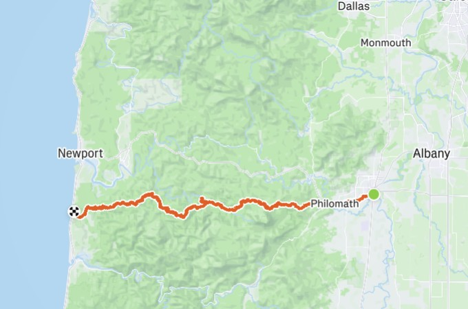

Artificial Intelligence AMP Student (Accelerated Masters Program) @ Oregon State
I specialize in building unbreakable foundations. My work sits at the intersection of high-performance systems engineering and cost-optimized AI. Whether I'm implementing process management in C or architecting hybrid-edge vision pipelines, I focus on reliability, scalability, and measurable cost-efficiency.
98%
Data Reduction
$0.059/s
Inference Savings
AWS
Cloud-Native
Architected a computer vision pipeline that utilizes local OpenCV motion filtering to reduce cloud ingestion. Integrated AWS Rekognition and S3 via a FastAPI backend to deliver enterprise-grade intelligence at a fraction of the cost.
Play Store Published
Shipped a native Android app with an offline-first Room DB data layer. Built during a 1-week high-intensity sprint for the Evenki preservation community.
View on Play Store →Systems Programming
Engineered a custom shell in C with robust process management (fork, exec, waitpid) and signal handling (SIGINT/SIGTSTP) to ensure 0 zombie processes.
View Source Code →
CtC Ultra-Marathon
64.76 Miles
Completing a 16-hour, 8,724ft elevation gain ultra-marathon is a testament to the discipline I bring to engineering. I approach systems reliability with the same persistence: identifying the "peak" challenges, maintaining steady output under stress, and ensuring a 0% DNF rate on critical enterprise projects.
16:10:58
Moving Time
8,724 ft
Elev Gain
8,579
Calories
4:29
Mile PR
Integrated backend API controls with an AI agent to automate personalized curation via Spotipy & RapidAPI.
API IntegrationLed camp initiatives at Open Window School, managing logistics and safety for 20+ student groups.
ManagementCollaborated in a cross-functional 20-person Agile team to ship production software under tight deadlines.
Agile Delivery